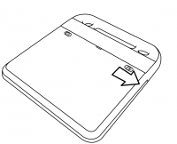
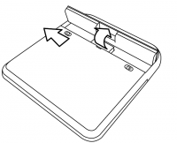

| Charger la batterie | Index | Réinitialiser les paramètres d'usine |
N'enlevez jamais la batterie à moins qu'elle ne soit défectueuse. Par exemple, une batterie défectueuse pourrait ne pas se charger ou pourrait perdre son énergie très rapidement. Voici les instructions pour enlever une batterie défectueuse.


Pour réinserer la batterie, référez-vous au chapitre Charger la batterie.
Allez sur http://wiki.laptop.org/go/Directory_of_repair_centers pour y trouver une liste des plus récentes adresses de centres de réparation, et demandez un remplacement de batterie pour votre XO.
| Charger la batterie | Index | Réinitialiser les paramètres d'usine |